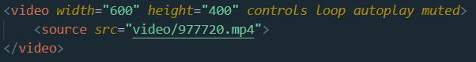

Agar halaman terlihat lebih menarik, kita dapat menampilkan video dalam html kita.
Caranya yaitu:

Hasilnya adalah:
Atribut dalam video mirip dengan atribut pada audio. Atribut tersebut diantaranya: